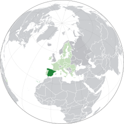

💃 Cultura e Festivais
A Espanha é a terra do Flamenco e de festivais mundialmente famosos, como a "Tomatina" e a "Fiesta de San Fermín".
Arte: O país foi o lar de gênios como Pablo Picasso, Salvador Dalí e o arquiteto Antoni Gaudí.


A Espanha é um país europeu localizado na Península Ibérica. É conhecida por sua história imperial, sua forte influência cultural nas Américas e por ser um dos destinos turísticos mais visitados do planeta.
A Espanha é a terra do Flamenco e de festivais mundialmente famosos, como a "Tomatina" e a "Fiesta de San Fermín".
Arte: O país foi o lar de gênios como Pablo Picasso, Salvador Dalí e o arquiteto Antoni Gaudí.
A culinária espanhola é celebrada pela dieta mediterrânea e pelo costume social de compartilhar comida.
A Espanha produz cerca de 45% de todo o azeite de oliva do mundo! Outra curiosidade é que o país tem o costume da "Siesta", uma pausa após o almoço para descansar durante o horário de pico do calor. Além disso, a Espanha é o país com o maior número de bares por habitante em toda a União Europeia.